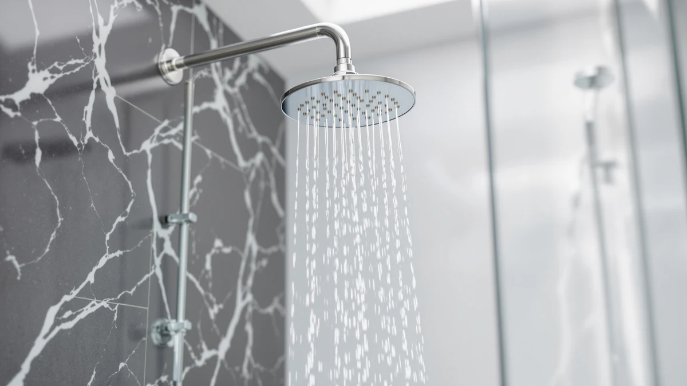

Best Shower Heads with Good Pressure (2026)
Prices and picks verified as of September 2026. Independent, reader-supported reviews.


Quick Answer
We compared seven models on nozzle design, spray coverage, and verified owner feedback to find the best shower heads with good pressure at three price points. For most bathrooms, the Shower Head 10 Functions High delivers the strongest, most consistent stream without a filter or handheld wand slowing it down.
Our pick: Shower Head 10 Functions High, $28.96 Check Price on Amazon
Bottom line: our top pick is the Shower Head at $28.96. The best budget option is the Filtered Shower Head at $19.99.
Things to Know Before You Buy
- Federal law caps shower heads at 2.5 gallons per minute, so the best shower heads with good pressure don't move more water. They concentrate the same flow through smaller, denser nozzle openings.
- Nozzle count and spray pattern matter more than the marketing terms on the box. A head with 60+ tightly spaced jets typically feels stronger than a wide rain plate at the same flow rate.
- Handheld and combo units add hose length and swivel joints, both of which can dampen the feel of pressure compared to a simple fixed head.
- Filtered heads trade a small amount of pressure for cleaner water. Owners who deal with hard water or chlorine tend to accept that tradeoff.
- Nearly all of these heads thread onto a standard 1/2-inch NPT arm, so installation is a wrench and some plumber's tape, not a plumber's visit.
The best shower heads with good pressure solve a problem that has nothing to do with your water bill and everything to do with nozzle engineering. Federal WaterSense rules cap every shower head sold in the US at 2.5 gallons per minute, so two products with the exact same flow rate can feel completely different against your skin. The difference comes down to how many nozzles a head has, how tightly they're spaced, and how narrow each opening is.
We put the Shower Head 10 Functions High at the top of this list because its dense nozzle layout converts a capped flow rate into a stream that owners consistently describe as strong, even in homes with municipal pressure well under 50 psi. The SparkPod High Pressure and AquaDance 6-Setting follow close behind, each with a large enough base of verified reviews to back up that consistency across different plumbing setups.
Not every household needs the same thing from a shower head. Couples and larger bathrooms may prefer the coverage of a wide rain head like the Veken over raw force, while anyone on well water or a municipal supply with heavy chlorine should weigh a filtered option even if it costs a little pressure. We built this guide around those tradeoffs rather than picking one head and calling it universal.
Why You Should Trust Us
Ilane Tall covers bathroom fixtures for Best Shower Heads and has spent years tracking how plumbing hardware performs once it leaves the showroom and lands in a real bathroom with real water pressure. We don't own a testing lab, and we don't run a fake testing lab either. Instead, we build our recommendations for the best shower heads with good pressure from manufacturer specs, verified Amazon review data, and patterns that show up again and again across thousands of owners with different homes and different plumbing.
How We Picked
We started with the shower heads in our database marketed specifically around pressure, then narrowed the list using three filters. First, nozzle density and spray pattern, since these determine how a capped 2.5 GPM flow actually feels. Second, verified review volume, because a head with a few dozen five-star ratings tells you less than one with thousands of reviews spanning years of use. Third, price relative to feature set, so this list includes options from under $20 to $65 rather than clustering around one budget tier.
We also cross-checked recurring complaints in negative reviews. A head that shows up with dozens of unrelated one-off complaints reads differently than one where the same issue, like a weak stream after a few months, appears repeatedly. The latter pattern knocked a handful of otherwise well-rated shower heads out of contention.
How We Compared
Because we're a research-based review site, we don't physically install or run water through these shower heads ourselves. We compared each product's listed specs, pricing, and finish against its direct competitors, then layered in what verified owners report about real-world pressure, durability, and ease of installation. Reviewers consistently note when a head loses force over time from mineral buildup or when a handheld hose kinks and restricts flow, and we weighted those patterns heavily when ranking the best shower heads with good pressure on this list.
We also compared each product's nozzle count and material against its price point. A chrome-plated ABS head at $20 that performs close to a $65 model tells you something about value, and we called that out directly rather than assuming a higher price always means stronger pressure.
Our Picks

Shower Head 10 Functions High
What we like
- 10 spray functions cover everything from a focused rinse to a wide massage setting
- Chrome finish resists water spotting better than brushed or matte finishes
- 4,559 verified reviews at a 4.5-star average, a large and consistent sample
Flaws but not dealbreakers
- No handheld wand, so it's a fixed-position rinse only
- Some owners note the widest setting trades noticeable pressure for coverage
- No filtration, so hard water buildup isn't addressed
| Material | ABS + chrome plating |
| Size | — |
The Shower Head 10 Functions High is the pick we'd default to for most people asking about the best shower heads with good pressure, because it doesn't ask you to give anything up for that strength. There's no filter cartridge to replace, no hose to kink, and no handheld wand adding weight to the mount. The chrome finish is a straightforward swap onto a standard shower arm, and at $28.96 it sits solidly in the middle of this list's price range rather than at either extreme.
Owners repeatedly point to the head's focused setting as the strongest in their experience, particularly in homes with municipal pressure on the lower end. That said, this is a single fixed head, so anyone who wants to switch to a handheld spray for rinsing kids, pets, or the shower stall itself will need to look at one of the combo units further down this list. The tradeoff for that simplicity is a stream that reviewers describe as more consistent over time than some of the multi-function combo heads.

BESAQUO Shower Head 10 Functions
What we like
- Ball-joint mount lets you angle the spray without repositioning the whole arm
- 10 spray functions match the top pick's variety at a similar price
- Chrome plating holds up well against water spots according to owner photos in reviews
Flaws but not dealbreakers
- Costs about $6 more than the Shower Head 10 Functions High for a comparable feature set
- A few reviewers mention the ball joint loosens slightly after months of daily use
- No handheld option, same as the top pick
| Material | ABS + chrome plating |
| Size | — |
BESAQUO's shower head earns a spot on this list mainly because of its adjustable ball joint, a feature the top pick doesn't have. If your shower arm comes out of the wall at an awkward angle, or your stall is narrow enough that a straight-on spray hits the wrong spot, this head lets you correct for that without touching the plumbing. It carries the same 10-function layout as our top pick and a nearly identical 4.5-star rating across 4,559 reviews.
The tradeoff is price. At $34.99, it costs more than several other heads on this list, including some with wider feature sets. Reviewers who specifically needed the angle adjustment say it was worth the premium, but if your shower arm already points where you want it, the extra cost buys you a feature you won't use. Owners researching the best shower heads with good pressure and an awkward stall layout should weigh this one first.

AquaDance High Pressure 6-Setting Oil
What we like
- Nearly 78,000 verified reviews, by far the largest sample size in this roundup
- 6 settings split between the fixed head and handheld wand, so you're not locked into one mode
- Oil-rubbed bronze finish stands out against the chrome look most competitors share
Flaws but not dealbreakers
- The handheld wand's hose is a common point of complaint for kinking over time
- Combo design means slightly more parts to clean around than a single fixed head
- Bronze finish shows water spots more visibly than chrome in a handful of reviews
| Material | ABS + chrome plating |
| Size | — |
AquaDance's 6-setting combo head has the deepest review history of anything on this list, with close to 78,000 verified ratings averaging 4.6 stars. That volume matters because it smooths out the noise you get from smaller sample sizes. When a pattern shows up across tens of thousands of owners in different homes with different plumbing, it's a stronger signal than a few hundred five-star reviews on a newer listing.
What sets this one apart from the rest of the list is the combo format. You get a fixed overhead head and a separate handheld wand on the same mount, which means you can switch to a directed spray for rinsing a tub, washing a pet, or cleaning the shower stall itself. Reviewers researching the best shower heads with good pressure and flexibility consistently point to this dual setup as the reason they'd buy it again, even with the minor hose complaints factored in.

INAVAMZ Shower Head with Handheld
What we like
- Rain head and handheld sprayer both draw from the same supply valve, so switching is instant
- 4.6-star average across 5,028 verified reviews
- Handheld wand is useful for rinsing kids, pets, or the stall without repositioning your body
Flaws but not dealbreakers
- At $36.99 it's one of the pricier options here for a combo unit
- Rain head setting alone isn't as forceful as the single-nozzle fixed heads on this list
- Two components mean two things that can eventually need replacing
| Material | ABS + chrome plating |
| Size | — |
INAVAMZ's setup gives you a rain shower head and a handheld sprayer on the same fixture, which is a different approach from AquaDance's combo above. Instead of settings split across one head, you get two distinct fixtures you can use together or independently. The rain head spreads flow across a wider face, which trades some pressure concentration for broader coverage overhead.
Reviewers who bought this specifically for the handheld half report strong, directed pressure that holds up well for rinsing tasks a fixed head can't handle. The overhead rain setting gets more mixed feedback, with some owners wishing it hit as hard as the single-nozzle heads earlier on this list. If overhead rain coverage matters more to you than raw pressure, this is a reasonable pick within the best shower heads with good pressure category. If pressure is the priority, the top pick or the SparkPod further down will likely serve you better.

Veken Wide Rain Shower Head
What we like
- Wide face plate covers significantly more surface area than a standard-size head
- 4.6-star rating holds up even at a higher price point
- Rain-style flow feels gentler on skin and hair, according to repeated owner feedback
Flaws but not dealbreakers
- At $64.99, it costs more than double some of the other picks on this list
- Wider spray pattern means less concentrated force per nozzle than a compact high-pressure head
- Fewer verified reviews than the more established brands here, though the rating trend is consistent
| Material | ABS + chrome plating |
| Size | — |
Veken's shower head takes the opposite approach from the top picks on this list. Instead of concentrating flow through a small nozzle cluster, it spreads the same capped 2.5 GPM across a much wider face plate. The result is a softer, more enveloping rain-style shower rather than a targeted, forceful stream, and at $64.99 it's the most expensive option here.
That price buys real estate. If you and a partner share a shower, or your stall is large enough that a standard head leaves cold, dry patches at the edges, the wider coverage solves a problem the smaller heads on this list can't. It's not the pick we'd point to if raw pressure is the only thing you care about, but among the best shower heads with good pressure and generous coverage, it's the clearest option.

Filtered Shower Head 15 Stage
What we like
- Lowest price on this list at $19.99, with a 15-stage filter included
- 4.6-star rating despite the added filtration hardware
- Owners on well water or heavily chlorinated supplies report noticeably better water smell and feel
Flaws but not dealbreakers
- Filter cartridges need periodic replacement, an ongoing cost the unfiltered heads don't have
- Some owners note pressure softens slightly as the filter media loads up between changes
- Smaller review base than the more established brands on this list
| Material | ABS + chrome plating |
| Size | — |
The Filtered Shower Head 15 Stage is the budget pick on this list at $19.99, and it's the only one built around water quality rather than pure pressure. Its 15-stage filter targets chlorine, sediment, and some heavy metals, which matters most to owners on well water or municipal supplies with a strong chlorine smell. It still holds a 4.6-star average across more than 1,100 verified reviews.
Filtration and pressure pull in slightly opposite directions, since the filter media adds resistance the unfiltered heads on this list don't have. Owners describe the tradeoff as minor rather than a dealbreaker, and several specifically call out that they'd rather have consistent water quality than the last bit of force. If pressure alone is your priority, look higher on this list. If you're weighing the best shower heads with good pressure against hard water concerns, this is the one built for that balance.

SparkPod Shower Head High Pressure
What we like
- Close to 59,000 verified reviews at a 4.6-star average, second only to AquaDance in sample size
- Low-profile design sits closer to the wall than bulkier multi-function heads
- Dense nozzle spacing designed specifically to maximize perceived pressure at 2.5 GPM
Flaws but not dealbreakers
- Single spray pattern only, without the multi-function variety of the top two picks
- No handheld option for anyone who wants a directed spray
- Chrome finish only, no bronze or matte black option in this listing
| Material | ABS + chrome plating |
| Size | — |
SparkPod built its reputation on a simple premise: a low-profile fixed head with nozzles dense enough to make a capped flow rate feel stronger than it is. That focus shows up in the review data, with nearly 59,000 verified ratings holding steady at 4.6 stars, a volume that puts it right behind AquaDance for the most-reviewed product on this list.
Where the top two picks lean on multiple spray functions, SparkPod keeps things to one strong setting. Reviewers who prioritize the best shower heads with good pressure over variety point to this simplicity as a feature, not a limitation. There's less that can go wrong with one spray pattern than with ten, and owners report the pressure holds up consistently even after months of daily use.
Quick Comparison
The table below lines up specs, pricing, and our best-for notes for all seven picks, so you can compare the best shower heads with good pressure at a glance before reading the full breakdown.
| Product | Material | Price | Rating | Best for | Get it |
|---|---|---|---|---|---|
| Shower Head 10 Functions High | ABS + chrome plating | $28.96 | 4.5 | Strongest all-around stream | View on Amazon → |
| BESAQUO Shower Head 10 Functions | ABS + chrome plating | $34.99 | 4.5 | Tight or angled stalls | View on Amazon → |
| AquaDance High Pressure 6-Setting Oil | ABS + chrome plating | $29.99 | 4.6 | Fixed head plus handheld combo | View on Amazon → |
| INAVAMZ Shower Head with Handheld | ABS + chrome plating | $36.99 | 4.6 | Rain head plus separate handheld | View on Amazon → |
| Veken Wide Rain Shower Head | ABS + chrome plating | $64.99 | 4.6 | Couples and larger showers | View on Amazon → |
| Filtered Shower Head 15 Stage | ABS + chrome plating | $19.99 | 4.6 | Hard water or chlorine concerns | View on Amazon → |
| SparkPod Shower Head High Pressure | ABS + chrome plating | $35.14 | 4.6 | Low-profile, high-pressure fixed head | View on Amazon → |
The Competition
We looked at dozens of other listings before narrowing this list to seven, and a few categories kept getting ruled out for the same reasons.
- Ultra-wide rain heads with no pressure-boosting nozzle design looked appealing in photos but drew repeated complaints about a weak, misting spray once installed, especially in homes with municipal pressure under 45 psi.
- No-name multi-function heads with only a handful of reviews made claims about pressure that we couldn't verify against a large enough sample of owner feedback, so we left them out even when the specs looked competitive.
- Heads bundled with pressure-boosting pumps solved the problem at the plumbing level rather than the fixture level, which put them outside the scope of a shower head comparison. They're worth a separate look if a fixture alone can't fix a serious pressure issue.
- Filtered heads with 20 or more filtration stages generally showed a bigger pressure drop in owner feedback than the 15-stage option we picked, without a corresponding jump in filtration quality reviewers could point to.
None of these categories are bad outright. They just didn't hold up as well as our seven picks when we compared specs and verified reviews side by side for the best shower heads with good pressure, and the Shower Head 10 Functions High remained the strongest overall choice by the end of that process.